Table of Contents
- 1. Image Retrieval Using BIM and Features from Pretrained VGG Network for Indoor Localization
- 2. Very Deep Convolutional Networks for Large-Scale Image Recognition
- 3. Visualizing and Understanding Convolutional Networks
- 4. BIM Tracker: A model based visual tracking approach for indoor localisation using a 3D building model
- 5. BIM-PoseNet: Indoor camera localisation using a 3D indoor model and deep
- 6. Learning to Compare Image Patches via Convolutional Neural Networks
- 7. Structure Extraction from Texture via Relative Total Variation
- 8. Cross-Domain 3D Model Retrieval via Visual Domain Adaptation
- 9. Cross-domain Image Retrieval with a Dual Attribute-aware Ranking Network
- 10. You Only Look Once: Unified, Real-Time Object Detection
- 11. A Review on Deep Learning Techniques Applied to Semantic Segmentation
- 12. Encoder-Decoder with Atrous Separable Convolution for Semantic Image Segmentation
- 13. Data-driven Visual Similarity for Cross-domain Image Matching
- 14. H-Net: Neural Network for Cross-domain Image Patch Matching
- 15. Deep sketch feature for cross-domain image retrieval
- 16. An End-to-End Deep Learning Architecture for Graph Classification
- 17. Hypergraph Neural Networks
- 18. Learning with Hypergraphs: Clustering, Classification, and Embedding
- 19. A comprehensive survery on graph neural network
- 20. Volumetric and Multi-View CNNs for Object Classification on 3D Data
- 21. Weisfeiler-Lehman graph kernels
1 Image Retrieval Using BIM and Features from Pretrained VGG Network for Indoor Localization
1.1 network
VGG16 and VGG19
ImageNet pretrained network
1.2 two experimental:
- in corridor
- in hall
1.3 study content
view overlap
which layer is best
1.4 result
- version-based method is more efficient
- the fourth layer feature map is best
- ImageNet network can extract generic features
1.5 problem
- large object effect like a picture frame or a poster
- structure similarity (multiple pictures)
2 Very Deep Convolutional Networks for Large-Scale Image Recognition
VGG: Visual Geometry Group
2.1 main work
investigate the effect of the convolutional network depth on its accuracy in the large-scale image recognition setting.
VGG16-19 winned that ImageNet Challenge 2014 first in localisation and classification tracks.
VGG representations generalise well to other datasets.
2.2 introduction
ImageNet Large-Scale Visual Recognition Challenge (ILSVRC)
attempts to improve accuracy:
- utilise smaller receptive window size and samller stride of the first cnvolutional layer (Zeiler & Fergus, 2013; Sermanet et al., 2014)
- train and test the networks densely over the whole image and over multiple scales (Sermanet et al., 2014; Howard, 2014)
- increase the depth of the network by adding more convolutional layers (this paper)
2.3 convnet configuration
2.3.1 architecture
| input | 224 x 224 RGB image | |
| preprocessing | substract the mean RGB value, from each pixel | (why?) |
| conv. filter | kernel=3 x 3 or 1 x 1; stride=1 | |
| spatial pooling | max-pooling, 2 x 2, stride=2 | |
| activation | rectification(ReLU) |
filters with a very small recptive field: 3 x 3 (the smallest size to capture the notion of left/right, up/down, center)
1 x 1 convolution filter: can be seen as a linear transformation of the input channels (followed by non-linearity)
Spatial padding is such that the spatial resolution is preserved after convolution. (i.e. the padding is 1 pixel for 3 x 3 conv. layers) (why?)
LRN: local response normalization (why? it des not improve the performance on the ILSVRC dataset)
2.3.2 configurations
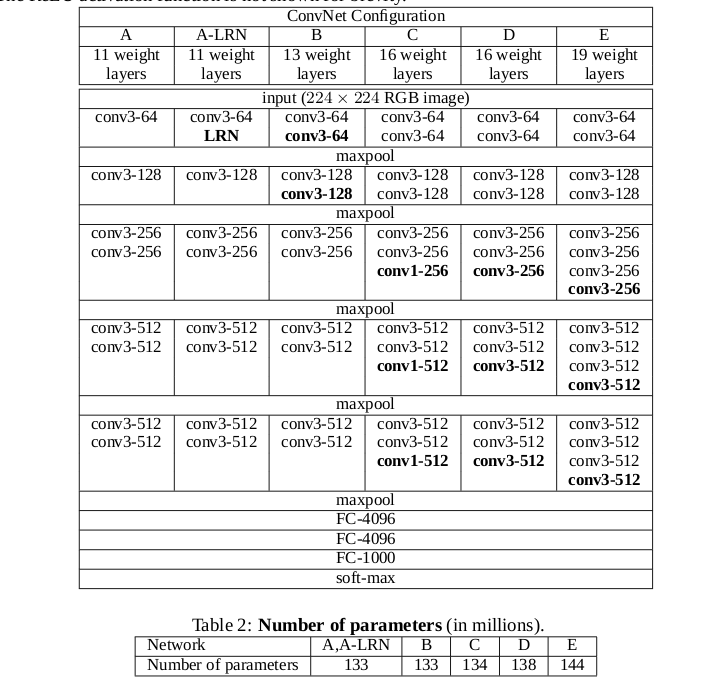
In spite of a large depth, the number of weights in our nets is not greater than the number of weights
in a more shallow net with larger conv. layer widths and receptive fields.
(That's one reason of using small kernel)
benefits of using three 3 x 3 conv. layer instead of a single 7 x 7 layer:
- incorporate three non-linear rectification layers instead of a single one ==> make the decision function more discriminative
- less parameters ==> imposing a regularisation on the 7 x 7 conv. filters, forcing them to have decomposition through the 3 x 3 filters
The incorporation of 1 × 1 conv. layers is a way to increase the non-linearity
of the decision function without affecting the receptive fields of the conv. layers.
2.4 classification framework
2.4.1 training
The training is carried out by optimising the multinomial logistic regression objective
using mini-batch gradient descent (based on back-propagation (LeCun et al., 1989)) with momentum.
| batch size | 256 |
| momentum | 0.9 |
FC layers
first layer regularisation: weight decay (the \(L_2\) penalty multiplier set to \(5\cdot 10^{-4}\))
second layer regularisation: dropout (dropout ratio set to 0.5)
The learning rate was initially set to \(10^{-2}\) , and then decreased by a factor of 10 when the validation set accuracy stopped improving.
The net converged after 74 epoches because of: (less epoches)
- implicit regularisation imposed b greater depth and smaller convolution filter sizes
- pre-initialisation of certain layers
The initialisation of the network weights is important, since bad initialisation can stall learning
due to the instability of gradient in deep nets. ("Understanding the difficulty of training deep feedforward neural networks")
The author of this paper used pre-training emthod tu circumvent the initialisation of the network.
Although, the pre-training method is unnecessary for the initialisation, how is it done?
training set:
- cropped from rescaled training images (one crop per image per SGD iteration)
- random horizontal flipping
- random RGB colour shift
Training image size:
equal to or greater than 224 x 224.
If the image is greater than 224 x 224, a crop will be done.
isotropically-rescaled ai sou 'tro pi kerli
scale jittering (one method of training set augmentation):
Each training image is individually rescaled by randomly sampling S from a certain range \([S_{min}, S_{max}]\) .
Crop S size input from sampled images.
2.4.2 testing
- rescale to a pre-defined smallest image side
- network applied densely over the rescaled image
- to obtain a fixed-size vector of class scores for the image, the class score is spatially averaged (sum-pooled)
multi-crop evaluation vs dense evalution:
2.5 classification experiments
Dataset:
| training | 1.3M images |
| validation | 50K images |
| testing | 100K images |
classification performance:
| top-1 error | the portion of incorrectly classified images |
| top-5 error | the portion of images such that the ground-truth category is outside the top-5 predicted categories |
2.5.1 single scale evaluation
A deep net with small filters outperforms a shallow net with larger filters.
Training set augmentation by scale jittering is indeed helpful for capturing multi-scale image statistics
What is convolution boundary condition?
Emsembling improves the performance duo to complementarity of the models.
2.6 Localisation
bounding box prediction:
SCR: single-class regression?
PCR: per-class regression?
logistic regression –> Euclidean loss
To come up with the final prediction:
greedy merging procedure
- merge spatially close predictions (by averaging their coordinates)
- rates them on the class scores
localisation error in ILSVRC criterion:
\(IoU = \frac{P\cap G}{P\cup G} < 0.5\)
Conclution: The preformance in localisation can be improved with very deep convolution nets.
2.7 generalisation of very deep features
ConvNets, pre-trained on ILSVRC, generalise well on other, smaller, datasets,
where training large models from scratch is not feasible due to over-fitting.
How:
remove the lst fully-connected layer and use 4096-D activation of the penultimate layer as image features
aggregation of feature:
- an image is rescaled
- the network is densely applied
- perform global average pooling on the resulting feature map (produces a 4096-D image descriptor)
- the descriptor is averaged with the descriptor of a horizontally flipped image
- extract feature over several scales
- the resulting multi-scale features can be either stacked or pooled across scales
20% of training images were used as a validation set for hyper-parameter selection.
hyper-parameter: set by human being. (learning rate, tree depth)
parameter: learned from a algorithm. (matrix weight of CNN)
If the dataset contains multi-scale image, stacking and pooling of feature are almost same.
Otherwise, stacking allows a classifier to expolit scale-specific representations, and behaves better.
3 Visualizing and Understanding Convolutional Networks
3.1 intruduction
Without clear understanding of how and why they work, the development of better models is reduced to trial-and-error.
To study the CNN:
- visualizing with multi-layer deconvolutinal network
- sensitivity analysis of the classifier output by occluding portions of the input images.
3.2 Approach
deconvnet: map features to pixels
switches: record the location of the local max in each pooling region.
In convnet, the max pooling operation is non-invertible, however we can obtain an approximate inverse with swithes
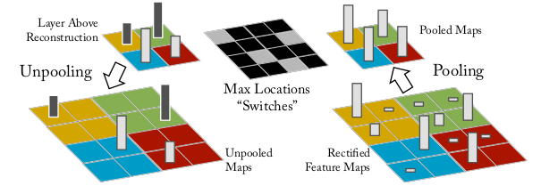
As these switch settings are peculiar to a given input image, the reconstruction obtained from a single activation thus resembles a small piece of the original input image, with structures weighted according to their contribution toward to the feature activation.
deconvent:
- unpooling with switches
- rectification with relu (same with convnet)
- filtering with transposed filter
3.3 Training Details
preprocess:
- resize the smallest dimension to 256
- crop the center 256*256 region
- substracting the per-pixel mean
- use 10 different sub-corps of size 224*224
optimization:
SGD with mini-batch (128)
Renormalize each filter whose RMS(root mean square) value exceeds a fixed radius of \(10^{-1}\) to this fixed radius to avoid a few of filters dominate.
3.4 Convnet Visualization
3.4.1 Feature visualization
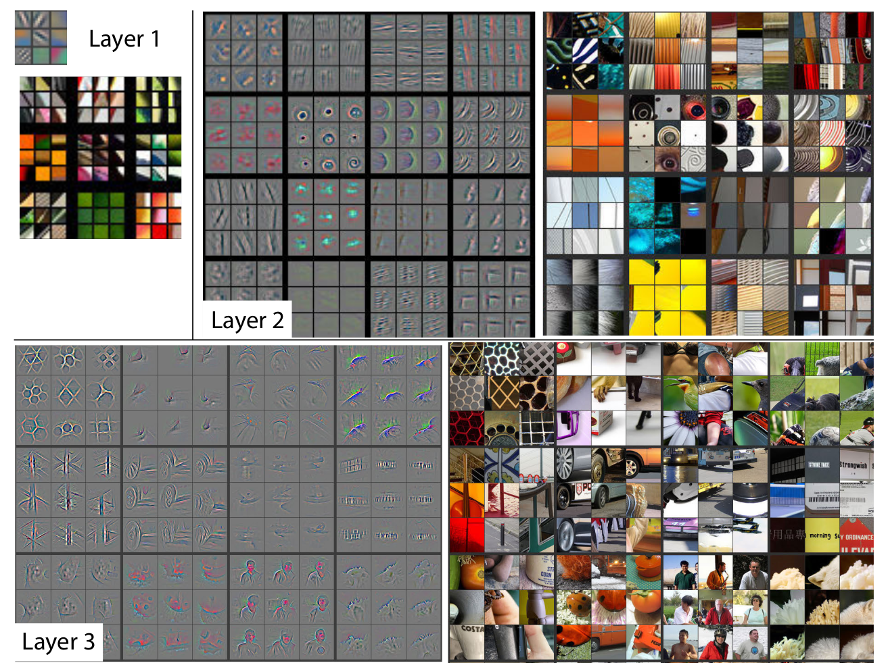
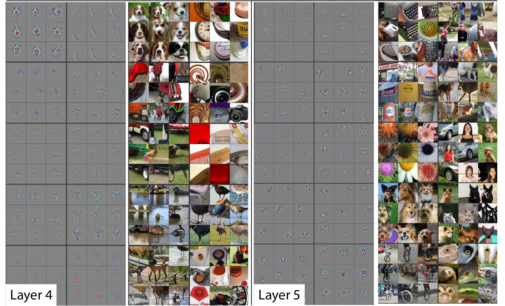
- strong grouping within each feature map
- greater invariance at higher layers
- exaggeration of discriminative parts of the image
3.4.2 Feature Evolution during Training
The latter layer need more epoches to converge.
3.4.3 Feature Invariance
For max pooling, the network output is stable to translations and scaling. In general, the output is not invariant to rotation.
3.4.4 Occlusion Sensitivity
method: occlude different parts of the image.
The model is localizing the objects as the probability of the correct class drops significantly
when the object is occluded.
This shows that the visualization genuinely corresponds to the image structure
that stimulates that feature map.
3.4.5 Correspondence Analysis
method: masking out specified parts and random parts of a image.
At layer 5, the model does establish some degree of correspondence
by comparing Mean Feature Sign Change with masking out left eye, right eye, nose and random region.
4 BIM Tracker: A model based visual tracking approach for indoor localisation using a 3D building model
localization with edges search and matching.
5 BIM-PoseNet: Indoor camera localisation using a 3D indoor model and deep
result: indoor localization in real-time with an accuracy of approximately 2 meters.
5.1 Introduction
objective: investigate whether pose estimation can be done by fine-tuning a pre-trained
network using synthetic images derived from a 3D indoor model rather than geotagged images
5.2 Background and related work
The visual localization approaches in the literature can be classified as:
- appearance-based
- image retrieval problem
- pose eistimation-base
- directly estimate the 6-DOF pose of a
- matching point features with 3D point clouds
- requirement of point clouds (usually derived from SfM)
- pose regression using RGB-D images
- fast and precise, but need RGB-D camera
- pose regression using images only
RGB-D: RGB + depth (distance between pixel and the sensors)
They fine-tuned a pre-trained network on image samples with ground-truth poses derived from the SfM methods.
They state: deep convolutional neural network trained for the task of classification preserve pose information till the final layer by leveraging transfer learning, despite being trained for a different task with a different dataset.
drawback (using ground-truth images): dependent on SfMmethods to estimate the ground truch camera poses,
required during fine-tuning the network.
synthetic images generated from 3D object models is used to eliminate the challenge of creating
manually labelled images (ground truth images)
5.3 Methodology
current CNN network -> based on -> PoseNet(Kendall,2015) -> based on -> GoogLeNet(Szegedy,2015)
Thw weights are updated from a pre-trained network of GooLeNet that is trained on Places dataset(Zhou,2014)
x is a vector representing;
q is a orientation representing;
\(\beta\) is a hyperparameter balancing the error of location and orientation.
The author of (Peng,2015) show that features derived from DCNNs are invariant to color, texture, pose and context.
In other words, if a network is invariant to an object's texture,
then it will have similar activations of neurons for the object with or without texture.
The network hallucinates the right texture when given a texutre-less object's shape.
(? don't understand)
Whether different model renderings and processing the real images to make them similar
to the synthetic images will increase the pose estimation accuracy.
To test this, we transform the synthetic and real images in a common feature space of edge gradient magnitude (gradmag) images.
(Converting images to edge gradmag comes at the cost of loss of information such as
colour and texture, but on the other hand, the main geometrical features of the images are preserved. )
5.4 experiments and result
- experiment 1: creating a baseline accuracy using real images
- experiment 2: fine-tuning with synthetic image dataset and test
- experiment 3: explore accuracy with detail
| Caffe library on Linux | |
| loss optimization | Adagrad gradient descent optimization algorithm |
| learing rate | \(10^{-3}\). |
| NVIDIA GTX980M | |
| batch size | 40 |
| resize to resolution | 320*240 |
| crop | 224*224 |
5.4.1 dataset
- synthetic image dataset
The BIM contains the main building elements including walls, floors, ceilings, doors, ceiling tube-lights,
and stairs, but not details such as material, fabrication, assembly and installation information
The height of the trajectory was kept in the range of \(1.5 - 1.8\) meters from the floor.
we have rendered images along the trajectory at 0.05 meters interval and \(\pm 10\) tilt.
- real image dataset
A total number of 1000 images of 640x480 pixels resolution were acquired at a constant 30 frames per second.
5.4.2 baseline performance using real images
The value of \(\beta\) lies in the range of 120 to 750. (beta seleted)
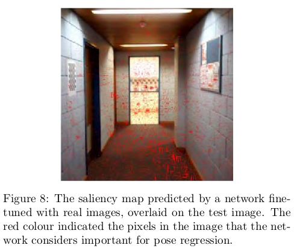
5.4.3 fine-tuning with synthetic images
The author showed that: different parts of a image make a difference in importance.
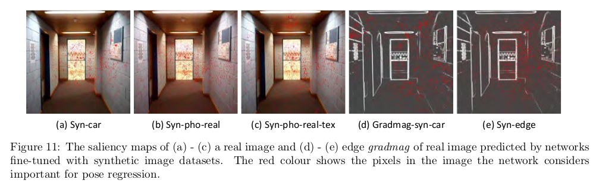
elements to case error:
- photo blur
- external elements (like poster)
- structral difference
Lighting of the scene plays a vital role in the appearance of the scene.
The high errors might be a result of the learnt features for each network,
which might not be suitable for pose regression with real images.
This fact is reflected in the saliency maps of the real images as predicted by the fine-tuned networks.
5.5 effects of level-of-detail of 3D models
6 Learning to Compare Image Patches via Convolutional Neural Networks
show how to learn directly from image data a general similarity function for comparing image patches.
Requirement: large datasets that contain patch correspondences between images.
This is not suitable from indoor localization, becuase this is no such large
dataset of camera pictures.
7 Structure Extraction from Texture via Relative Total Variation
a picture = meaningful structures + textured surfaces (commonly)
inherent variation and relative total variation to distinguish them
In psychology:
the overall structural features are the primary data
of human perception, not the individual details
8 Cross-Domain 3D Model Retrieval via Visual Domain Adaptation
9 Cross-domain Image Retrieval with a Dual Attribute-aware Ranking Network
DARN: Dual Attribute-aware Randing Network
retrieval feature learing.
two sub-networks, whose retrieval feature representations are driven by semantic attribute learning.
attribute-guided learning is a key factor for retrieval accuracy improvement.
9.1 Related Work
- Fashion Dataset
- Visual Analysis of Clothing with Fashion Datasetn
- Visual Attibutes
- Deep Learning (explicitly use attribute prediction as a regularizer in deep network)
Attributes are usually referred as semantic properties of objects or scenes that are shared across categories.
Richer supervision conveying annotator 'an nou tei ter rationales based on visual attributes, can be considered as a form of privileged information.
Cross-domain image retrieval can benefit from feature learning that simultaneously optimizes a loss function that takes into account visual similarity and attribute classification.
A poselet describes a particular part of the human pose under a given viewpoint.
9.2 Data Collection
<key,value> pair attribute.
key: attribute category.
value: attribute label.
9 categories of clothing attributes with 179 attribute values.
10 You Only Look Once: Unified, Real-Time Object Detection
How?
We frame object detection as a regression problem to spatically separated bounding boxes and associated class probabilites. A single neural network predicts bounding boxes and class probabilities directly from full images in one evaluation. Since the whole detection pipeline is a single network, it can be optimized end-to-end directly on detection performance.
10.1 Introduction
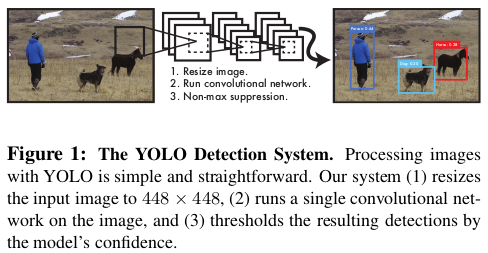
Benefits:
- YOLO extremely fast.
- YOLO reasons globally about the image when make predictions.
- YOLO learns generalizable representations of objects.
Disadvantage:
YOLO logs behind state-of-art detection systems in accuracy.
10.2 Unified Detections
end-to-end
At traning time:
- Divide the input image into an \(S \times S\) grid. If the center of an object falls into a grid cell, that grid cell is responsible for detecting that object.
- Each grid cell predicts \(B\) bounding boxes and confidence scores for those boxes. \(Pr(Object) * IOU_{pred}^{truth}\)
- Each bounding box consists of 5 predictions: \(x,y,w,h\) and confidence.
- Each grid cell also predicts C conditional class probabilities, \(Pr(Class_i |Object)\).
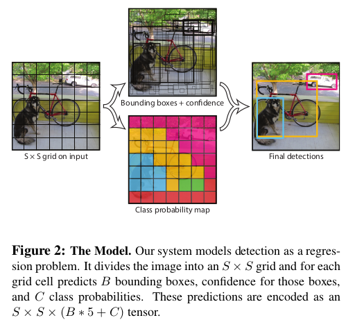
At test time:
class-specific confidence scores for each box is given by:
10.2.1 Network Design
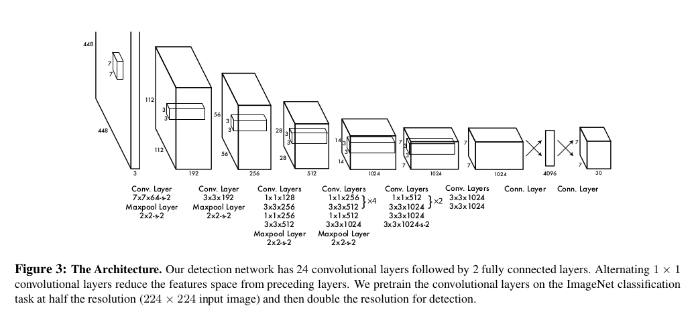
10.2.2 Training
- activation function: (leaky rectified linear activation)
\begin{equation} \phi(x) = \begin{cases} x, \quad \mathrm{if} x > 0 \\ 0.1x, \quad \mathrm{otherwise} \end{cases} \end{equation} - loss (sum-quared error)
We use sum-squared error because it is easy to optimize, however it does not perfectly align with our goal of maximizing average precision. It weights localization error equally with classification error which may not be ideal. Also, in every image many grid cells do not contain any object. This pushes the “confidence” scores of those cells towards zero, often overpowering the gradient from cells that do contain objects. This can lead to model instability, causing training to diverge early on.
To remedy this, we increase the loss from bounding box coordinate predictions and decrease the loss from confidence predictions for boxes that don’t contain objects. We use two parameters, \(\lambda_{coord}\) and \(\lambda_{noobj}\) to accomplish this. We set \(\lambda_{coord} = 5 \ \mathrm{and}\ \lambda_{noobj} = .5\).
Sum-squared error also equally weights errors in large boxes and small boxes. Our error metric should reflect that small deviations in large boxes matter less than in small boxes. To partially address this we predict the square root of the bounding box width and height instead of the width and height directly.
\begin{equation} \begin{matrix} \lambda_{coord}\sum_{i=0}^{S^2}\sum_{j=0}^B \mathbb{1}_{i,j}^{obj}[(x_i-\hat{x}_i)^2+(y_i-\hat{y}_i)^2 + (\sqrt{w_i}-\sqrt{\hat{w}_i})^2 + (\sqrt{h_i}-\sqrt{\hat{h}_i})^2] \\ + \sum_{i=0}^{S^2}\sum_{j=0}^B \mathbb{1}_{i,j}^{obj}(C_i-\hat{C}_i)^2 \\ + \lambda_{noobj} \sum_{i=0}^{S^2}\sum_{j=0}^B \mathbb{1}_{i,j}^{noobj}(C_i-\hat{C}_i)^2 \\ + \sum_{i=0}^{S^2}\mathbb{1}_i^{obj}\sum_{c\in \mathrm{classes}}(p_i(c)-\hat{p}_i(c))^2 \end{matrix} \end{equation}
where \(\mathbb{1}_i^{obj}\) denotes if object appears in cell \(i\) and \(1_{i,j}^{obj}\) denotes that the $j$th bounding box predictor in cell \(i\) is "responsible" for that prediction.
epochs 135 batch size 64 mementum 0.9 dacay 0.0005 dropout 0.5 learning rate:
first epochs \(10^{-3} \rightarrow 10^{-2}\) 75 epochs \(10^{-2}\) 30 epochs \(10^{-3}\) 30 epochs \(10^{-4}\)
10.2.3 Limitations of YOLO
- YOLO imposes strong spatial constraints on bounding box predictions since each grid cell only predicts two boxes and can only have one class.
- Since our model learns to predict bounding boxes from data, it struggles to generalize to objects in new or unusual aspect ratios or configurations.
- Our loss function treats errors the same in small bounding boxes versus large bounding boxes. A small error in a large box is generally benign but a small error in a small box has a much greater effect on IOU. Our main source of error is incorrect localizations.
10.3 Comparison to Other Detection Systems
Detectors for single classes like faces or people can be highly optimized since they have to deal with much less variation. YOLO is a general purpose detector that learns to detect a variety of objects simultaneously.
11 A Review on Deep Learning Techniques Applied to Semantic Segmentation
11.1 Summary
- no reproducibility
- no setup
- no source code
- no model weight
- no setup
- focus on accuracy
- no time consideration
- no space consideration
- no time consideration
- current best methods
- DeepLab on single RGB images dataset
- LSTM-CF on 2.5D or multimodal datasets
- PointNet on 3D data segmentation
- Clockwork Convnets on video sequences
- DeepLab on single RGB images dataset
12 Encoder-Decoder with Atrous Separable Convolution for Semantic Image Segmentation
12.1 Abstract
Spatial pyramid pooling module or encode-decoder structure are used in deep neural networks for semantic segmentation task. The former networks are able to encode multi-scale contextual information by probing the incoming features with filters or pooling operations at multiple rates and multiple effective fields-of-view, while the latter networks can capture sharper object boundaries by gradually recovering the spatial information. In this work, we propose to combine the advantages from both methods.
Model: https://github.com/tensorflow/models/tree/master/research/deeplab
13 Data-driven Visual Similarity for Cross-domain Image Matching
13.1 Introduction
In general, visual matching approaches can be divided into three broad classes, with different techniques tailored for each:
- exact matching
- bag-of-words [Sivic and Zisserman 2003]
- SIFT descriptor [Lowe 2004]
- SIFT descriptor [Lowe 2004]
- bag-of-words [Sivic and Zisserman 2003]
- approximating matching
- GIST descriptor [Oliva and Torralba 2006]
- HoG (Histogram of Gradients) descriptor [Dalal and Triggs 2005]
- pyramid of visual words [Lazebnik et al. 2009]
- CBIR (Content-Based Image Retrieval) [Datta et al. 2008]
- GIST descriptor [Oliva and Torralba 2006]
- cross-domain matching
- sketches to photographs [Chen et al. 2009; Eitz et al. 2010]
- drawings/paintings to photographs [Russell et al. 2011]
- photos under different illuminants [Chong et al. 2008]
- local self-similarity descriptor [Shechtman and Irani 2007]
- train a discriminative classifier using a single positive instance and a large body of negatives , provided that the negatives do not contain any images similar to the positive instance. [Wolf et al. 2009; Malisiewicz et al. 2011]
- sketches to photographs [Chen et al. 2009; Eitz et al. 2010]
13.2 Approach
Develop a right similarity distance function, which can "pick" which parts of the representation are most important for matching.
13.2.1 Data-driven Uniqueness
The visual similarity function is based on the idea of "data-driven uniqueness".
However, estimating "uniqueness" of a visual signal is not at all an easy task, since it requires a very detailed model of our entire visual world, since only then we can know if something is truly unique. Therefore, instead we propose to compute uniqueness in a data-driven way — against a very large dataset of randomly selected images.
The basic idea behind our approach is that the features of an image that exhibit high "uniqueness" will also be the features that would best discriminate this image (the positive sample) against the rest of the data (the negative samples).
13.2.2 Algorithm Description
We set up the learning problem using a single positive and a very large negative set of samples.
Each query image (\(I_q\)) is represented with a rigid grid-like HoG feature template (\(x_q\)).
To add robustness to small errors, we create a set of extra positive point \(\mathcal{P}\) by applying small transformations to the query image and generating \(x_i\) for each sample.
The SVM classifier is learned using \(I_q\) and \(\mathcal{P}\) as positive samples, and a set containing millions of sub-images \(\mathcal{N}\) (extracted from 10000 randomly selected Flickr images), as negatives.
Learning the weight vector \(w_q\) amounts to minimizing the following convex objective functions:
We use LIBSVM for learning \(\mathbf{w}_q\) with a common regularization parameter \(\lambda=100\) and the standard hingle loss functions \(h(x) = \max(0,1-x)\).
The hinge-loss allows us to cope with millions of negative windows because the solution only depends on a small set of negative support vectors.
In hard-negative mining, one first train an initial classifier using a small set of training examples, and then use the trained classifier to search the full training set exhaustively for false positives (hard examples).
Once sufficient number of hard negatives are found in the training set, one retrains the classifier \(\mathbf{w}_q\) using this set of hard examples.
We alternate between learning \(\mathbf{w}_q\) given a current set of hard-negative examples, and mining additional negative examples using the current \(\mathbf{w}_q\). (Histograms of Oriented Gradients for Human Detection)
We use 10 interations of hard-mining procedures.
Empirically, we found that more than 10 iterations did not provide enough improvement to justify the run-time cost.
The standard sliding window set up (Histograms of Oriented Gradients for Human Detection) is used to evaluate all the sub-windows of each image.
For this, the trained classifier is convolved with the HoG feature pyramid at multiple scales for each image in the database. (?)
We use simple non-maxima suppresion to remove highly-overlapping redundant matches.
13.2.3 Other Features
Our framework should be able to work with any rigid grid-like image representation where the template captures feature distribution in some form of histogram of high-enough dimensionality.
13.2.4 Limitations
Speed remains the central limitation of the proposed approach, since it requires training an SVM (with hard-negative mining) at query time.
14 H-Net: Neural Network for Cross-domain Image Patch Matching
15 Deep sketch feature for cross-domain image retrieval
end-to-end neural network trained by mixing data of sketches and natural images.
two contributions:
- an edge-preserving image resizing method.
- visual angle can affect the object recognition of humans -> multi-angle voting sheme for the sketch classification.
16 An End-to-End Deep Learning Architecture for Graph Classification
16.1 Abstract
Input: graph \(G=(V,E)\)
output: class \(y\)
two main challenges:
- how to extract useful features characterizing the rich information encoded in a graph for classification purpose
- how to sequentially read a graph in a meaningful and consistent order
solutions:
- localized graph convlution for challenge 1
- sortpooling layer for challenge 2
16.2 introduction
generalizing neural network to graph:
- spectral
- spatial
To keep much more vertex information and learn from the global graph topology.
A key innovation is a new SortPooling layer, which takes as input a graph’s unordered vertex features from spatial graph convolutions.
Instead of summing up these vertex features, SortPooling arranges them in a consistent order, and outputs a sorted graph representation with a fixed size, so that traditional convolutional neural networks can read vertices in a consistent order and be trained on this representation.
There is no high or low, simple or complex, good or bad thought, there is only suitable or not thought. I replace summing operation with concaternation operation in VGG + consine similarity experiment. Teacher Zhou said, it is a simple idea, there is no breakthrough. In this paper, the author add a new SortPooling layer. Instead of summing up these vertex features, SortPooling arranges them in a consistent order, and outputs a sorted graph representation with a fixed size, so that traditional convolutional neural networks can read vertices in a consistent order and be trained on this representation. It is also the idea of replacing summing with concaternation!
16.3 DGCNN (Deep Graph Convolutional Neural Network)
3 sequential stages:
- graph convolution layer
- SortPooling layer
- traditional convolutional and dense layers
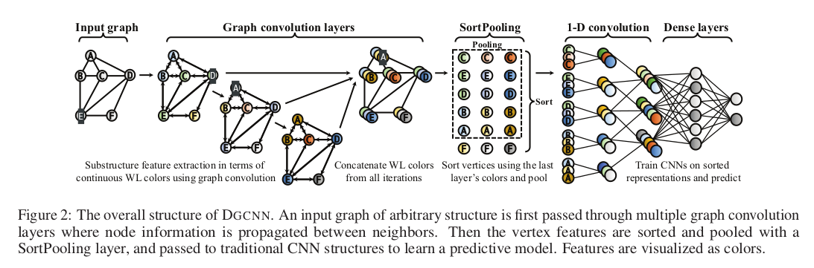
16.3.1 Graph convolutional layers
For example:
There are 5 vertices, \(A\) denote the adjacency matrix, \(X\) donote the node information matrix.
Graph:
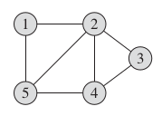
A:
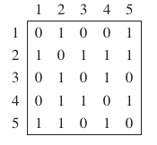
X:
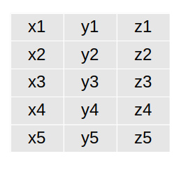
Graph convolution layer takes the form:
where \(\tilde{A} = A + I\) is the adjacency matrix of the graph with added self-loops,
\(\tilde{D}\) is the diagonal degree matrix with \(\tilde{D}_{ii} = \sum_{j}\tilde{A}_{ij}, W \in \mathbb{R}^{c\times c'}\) is a matrix of trainable graph convolution parameters, \(f\) is a nonlinear activation function, and \(Z\in \mathbb{R}^{n\times c'}\) is the output activation matrix.
After all several layers, the output are concaternated.
For this example graph
\(\tilde{A}\):
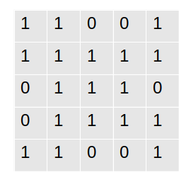
\(\tilde{D}\):
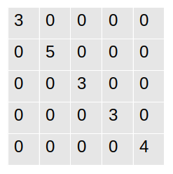
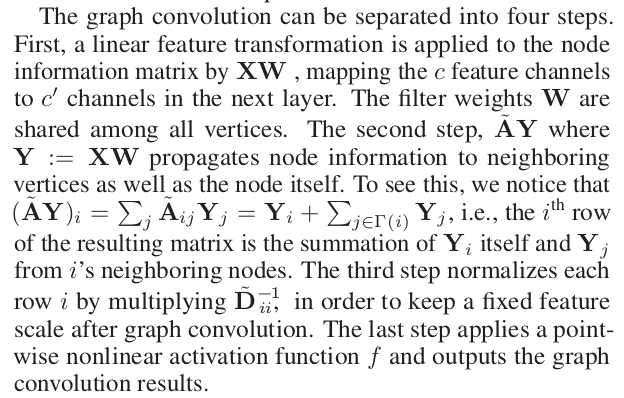
16.3.2 Connection with Weisfeiler-Lehman subtree kernel
WL is widely used in graph isomorphism checking: if two graphs are isomorphic, they will have the same multiset of WL colors at any iteration.
The intuition is that two graphs are similar if they have many common subtrees rooted at their vertices, which are characterized by colors (same color ⇔ same WL signature ⇔ same rooted subtree).
16.3.3 Connection with propagation kernel
The CNN layer proposed here is formed from two ideas:
- Weisfeiler-Lehman subtree kernel (compare the subtree)
- propagation kernel (compare the label distribution)
create with combination here.
16.4 The SortPooling layer
The main function of the SortPooling layer is to sort the feature descriptors, each of which represents a vertex, in a consistent order before feeding them into traditional 1-D convolutional and dense layers.
Sort vertices according to their structural roles in the graph.
In the SortPooling layer, the input \(Z^{1:h}\) is first sorted row-wise according to \(Z^h\).
17 Hypergraph Neural Networks
CNN is suitable for grid-like structure.
HGNN: hypergraph neural networks
GCN: graph convolution network
why: Confronting the challenges of learning representation for complex data
how: a hyperedge convolution operation is designed to handle the data correlation during representation learning.
graph convolution:
- is able to encode the graph structure.
- can be used in semi-supervised learning.
two contributions:
- HGNN for representation learning using hypergraph structure.
- extensive experiments on citation network classification and visual object classification tasks. (not meaningful)
two approaches:
- special operation for special data structure (CNN for grid-like image, GCN for graph, HGNN for hypergraph)
- special operation for different data structure (CNN for graph)
CNN on graph:
- spectral approaches
- spatial approaches
Hypergraph learning is first introduced in "Learning with Hypergraphs: Clustering, Classification, and Embedding" The first graph CNN: "Spectral Networks and Locally Connected Networks on Graphs"
17.1 Hypergraph Neural Network
17.1.1 TODO node(vertex) classification problem on hypergraph
17.2 Spectral convolution on hypergraph
identity matrix (W): equal weights for all hyperedges
hyperedge convolution:
The HGNN layer extract the high-order correlation on hypergraph by the node-edge-node transform.
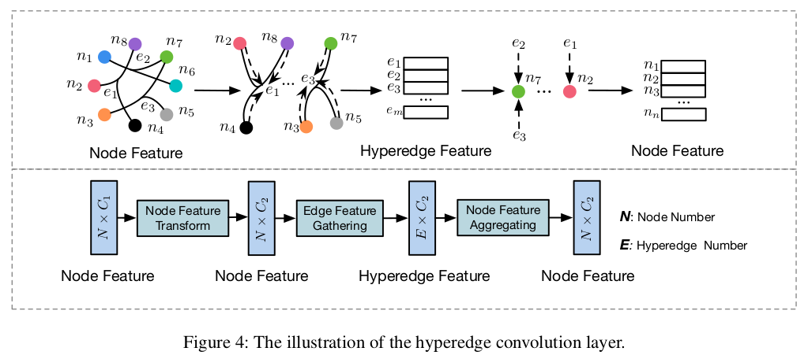
17.3 Hypergraph construction
We build the hypergraph according to the distance between two features.
More specifically, Euclidean distance is used to calculate \(d(\mathbf{x}_i,\mathbf{x}_j)\).
17.4 Converting 3D model to graph
a probability graph based on the distance of nodes.
18 Learning with Hypergraphs: Clustering, Classification, and Embedding
Why hypergraph?
In many real-world problems, however, relationships among the objects of our interest are more complex than pairwise.
Naively squeezing the complex relationships into pairwise ones will inevitably lead to loss of information which can be expected valuable for our learning tasks however.
main work:
generalize spectral clustering techniques to hypergraphs.
18.1 Preliminaries
A hyperedge \(e\) is said to be incident with a vertex \(v\) when \(v\in e\).
The adjacency matrix A of a hypergraph G is define as \(A=HWH^{\mathrm{T}}-D_v\),
where \(D_v\) is the degree matrix, \(H\) is the incidence matrix, \(W\) is the weight matrix, \(H^\mathrm{T}\) is the transpose of H.
Given an arbitrary set \(S\), let \(|S|\) denote the cardinality of \(S\).
For a hyperedge \(e\in E\), its degree is defined to be \(\delta(e)=|e|\).
18.2 Normailized hypergraph cut
Similar to the graph cut, a hypergraph cut is defined as follows:
For a vertex subset \(S\subset V\), lset \(S^c\) denote the compliment of \(S\).
A cut of a hypergraph \(G=(V,E,w)\) is a partition of \(V\) into two parts \(S\) and \(S^c\).
We say that a hypergraph \(e\) is a cut if it is incident with the vertices in \(S\) and \(S^c\) simultaneously.
Given a vertex subset \(S\subset V\), define the hyperedge boundary \(\partial S\) of \(S\) to be a hyperedge set which consists of hyperedges which are cut, i.e.
Define the volume vol\(S\) of \(S\) to the sum of the degrees of the vertices in \(S\).
where w(e) is the weight function, \(\partial S\) is the hyperedge boundary, \(\delta(e)\) is the degree of the edge \(e\) (\(\delta(e)=|e|\))
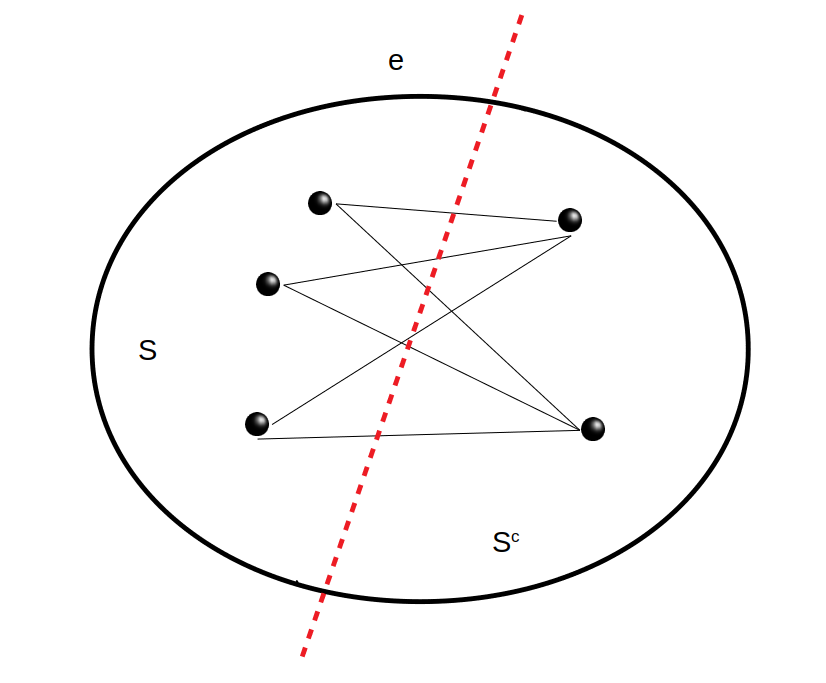
Naturally, we try to obtain a partition in which the connection among the vertices in the same cluster is dense while the connection between two clusters is sparse.
Compute to understand:
That is, the cut destroy the connection as less as possible.
18.3 Random walk explanation
19 A comprehensive survery on graph neural network
GNN networks:
- RecGNN
- ConvGNN
- spectrual-based
- spatial-based
- spectrual-based
19.1 Graph neural network history
The first GNN research mainly fall into RecGNN.(They learn a target node’s representation by propagating neighbor information in an iterative manner until a stable fixed point is reached.)
19.2 Graph neural networks vs. network embedding
Network embedding aims at representing network nodes as low-dimensional vector representations, preserving both network topology structure and node content information, so that any subsequent graph analytics task such as classification, clustering, and recommendation can be easily performed using simple off-the-shelf machine learning algorithms.
The main distinction between GNNs and network embedding is that GNNs are a group of neural network models which are designed for various tasks while network embedding covers various kinds of methods targeting the same task.
19.3 Graph neural networks vs. graph kernel methods
Graph kernel methods employ a kernel function to measure the similarity between pairs of graphs so that kernel-based algorithms like support vector machines can be used for supervised learning on graphs.
Graph kernels can embed graphs or nodes into vector spaces by a mapping function. The difference is that this mapping function is deterministic rather than learnable.
20 Volumetric and Multi-View CNNs for Object Classification on 3D Data
21 Weisfeiler-Lehman graph kernels
21.1 Introduction
A common assumption is that molecules with similar structure have similar functional properties.
The probelm of measuring the similarity of graphs is therefroe at the core of learning on graphs.
graph similarity measures
- subgraph isomorphism
- largest subgraph
- topologically identical (i.e. isomorphic.) ( most natural)
- inexact matching of graphs
- graph edit distances
- optimal assignment kernels
The graph isomorphism problem is in NP, but has been neither proven NP-complete nor found to be solved by a polynomial time algorithm. (Garey nad Johnson, 1979)
The problem of subgraph isomorphsim has been proven to be NP-complete.
Finding the largest commmon subgraph of two graphs is NP-complete.
Besides being computationally expensive or even intractable, similarity measures based on graph isomorphism and its variants are too restrictive in the sense that graphs have to be exactly identical or contain large identical subgraphs in order to be deemed similar by these measures.
Graph kernels respect and exploit graph topolgy, but restrict themselves to comparing substructures of graphs that are computable in polynomial time.
Graph kernels bridge the gap between graph-structured data and a large spectrum of machine learning algorithms called kernel methods.
Informally, a kernel is a function of two objects that quantifies their similarity.
Mathematically, it corresponds to an inner product in a reproducing kernel Hilbert space.
In functional analysis, a reproducing kernel Hilbert space (RKHS) is a Hilbert space of functions in which point evaluation is a continuous linear functional.
Roughly speaking, this means that if two functions \(f\) and \(f\) in the RKHS are close in norm, i.e. \(||f-g||\) is small, then \(f\) and \(g\) are also pointwise close, i.e. \(|f(x)-g(x)|\) is small for all \(x\).
The reverse need not to be true.
An RKHS is associated with a kernel that reproduces every function in the space in the sense that for any \(x\) in the set on which the functions are defined, "evaluation at \(x\)" can be performed by taking an inner product with a function determined by the kernel.
Such a reproducing kernel exists if and only if every evaluation functional is continous.
21.2 Review of graph kernels
where \(V\) is the set of vertices, \(E\) is the set of edges, \(l\) is a functiong that assining labels to vertices.
\(N(v) = \{u| (v,u) \in E\}\) donte the neighbourhood of node \(v\).
A walk is a sequence of nodes in a graph, in which consective nodes are connected by a edge.
A path is walk that consists of distinct nodes only.
A (rooted) substree is a subgraph of a graph, which has no cycles, but a designated root node.
Just as the notion of walk is extending the notion of path by allowing nodes to be equal, the notion of subtrees can be extended to subtree patterns.
This repetitions of the same node are then treated as distinct nodes, such that the pattern is still a cycle-free tree.
All subtree kernels compare subtree patterns in two graph, not (strict) substrees.
graph kernels:
- based on walks nad paths
- based on limited-size subgraphs
- based on subtree patterns
Graph kernels based on walks and paths compute the number of matchings of pairs of random walks in two graphs.
Graph kernels based on limited-size subgraphs represent graphs as counts of all types of subgraphs of size \(k\in \{3,4,5\}\). (apply to unlabeled graphs only)
Subtree kernels (defined by Ramon and \(G\ddot{a}rtner\) compare all matchings between neighbours of tow nodes \(v\) from \(G\) and \(v'\) from \(G'\).
The subtree kernels in (Mahé and Vert, 2009) and (Bach, 2008) refine the Ramon-Gärtner kernel.
They propose to consider $α$-ary subtrees with at most \(\alpha\) children per node.
This restricts the set of matchings to matchings of up to \(\alpha\) nodes.
It is a general limitation of all the aforementioned graph kernels that they scale poorly to large, labeled graphs with more than 100 nodes.
21.3 The general Weisfeiler-Lehman kernels
21.3.1 The Weisfeiler-Lehman kernel framework
- WL sequence
- kernel distribution
- positive semidefinite